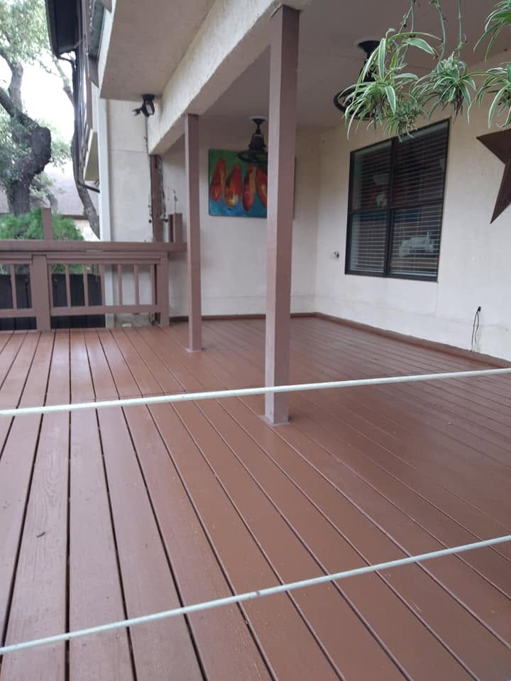
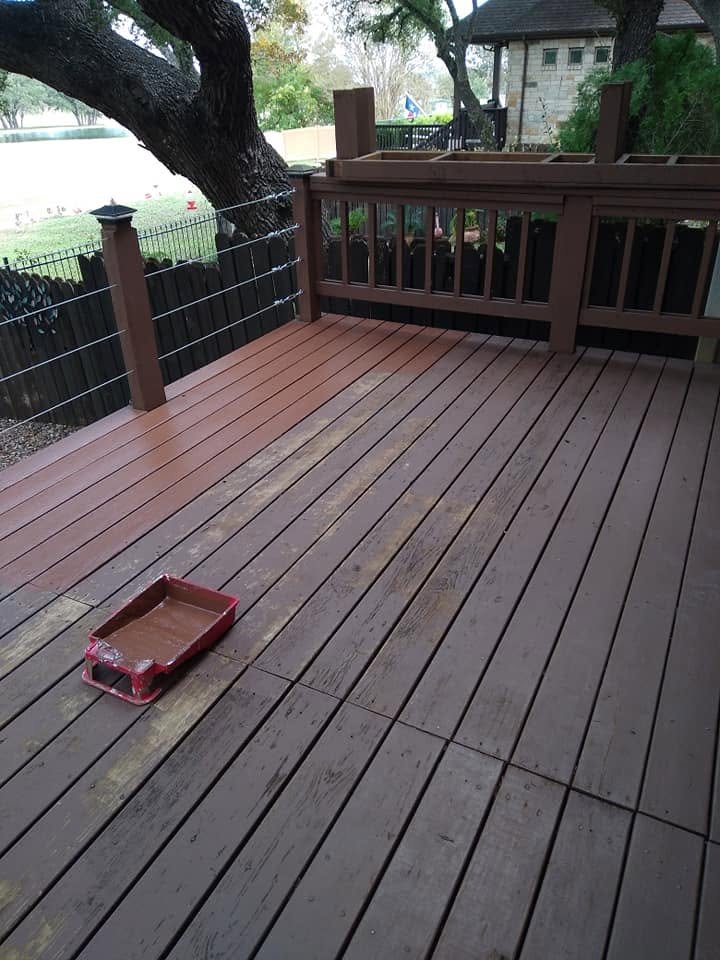
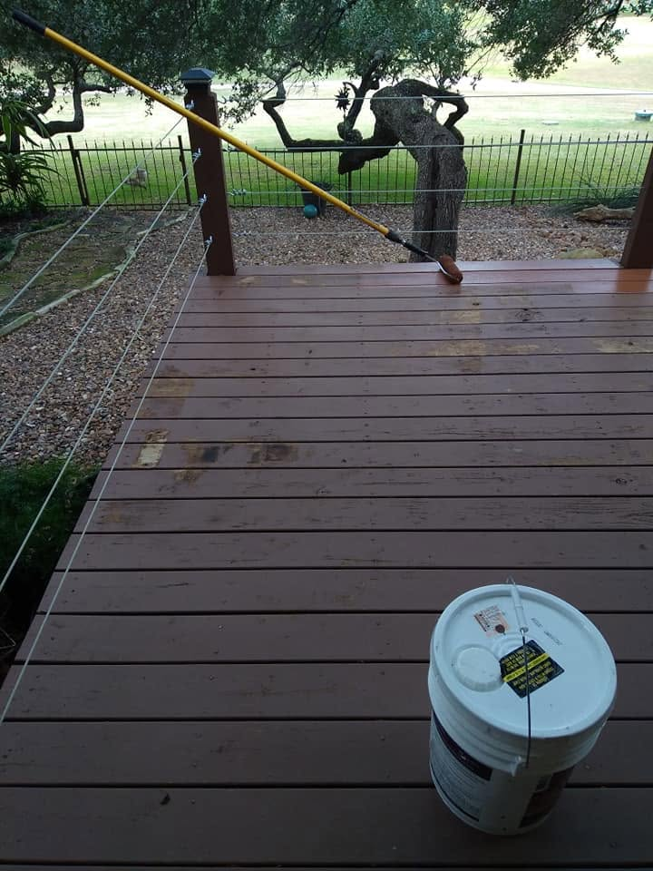
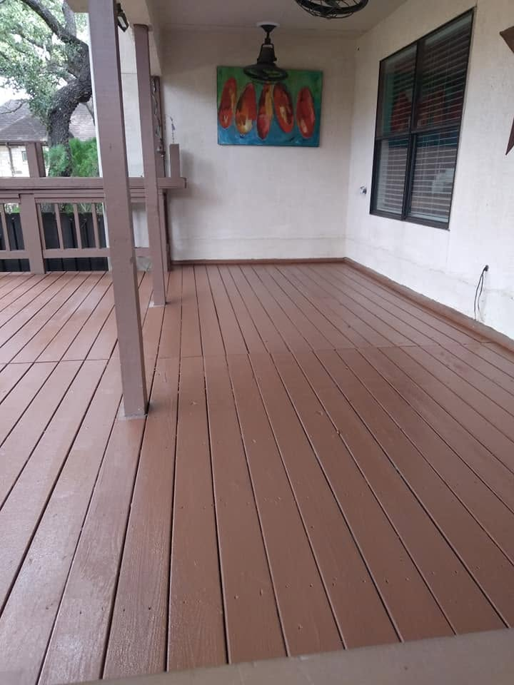
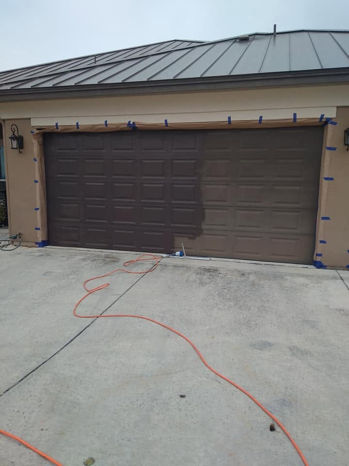
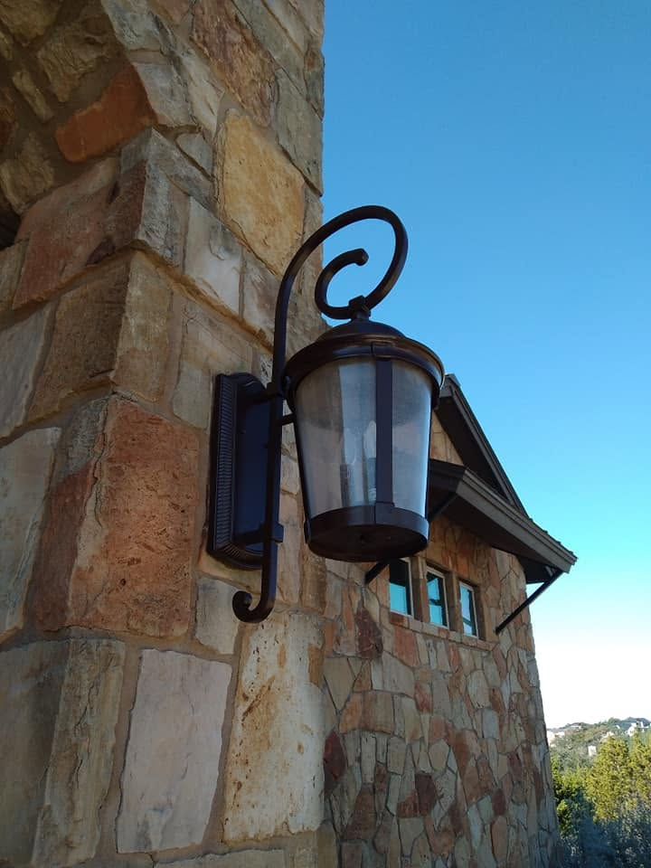

The Handyman in Canyon Lake: home repairs, inside and out
All your home repairs, interior and exterior, A to Z. We do it all, from restaining a deck to repainting a garage door.
Call (830) 730‑2717Canyon Lake, Texas 78133

Deck and porch staining
We restain decks and porches. These photos run from the middle of the job to done.



Painting and the rest of the house
We repaint too. This garage door is half done, with the edges taped and papered.
Whatever home repairs you have, indoors or out, call and ask.


What a customer says
“Does a great job, has fair pricing, is on time, and communicates well. Highly recommend.”
Call The Handyman in Canyon Lake
(830) 730‑2717 Call now- thehandymancl@gmail.com
- Where
- Canyon Lake, Texas 78133